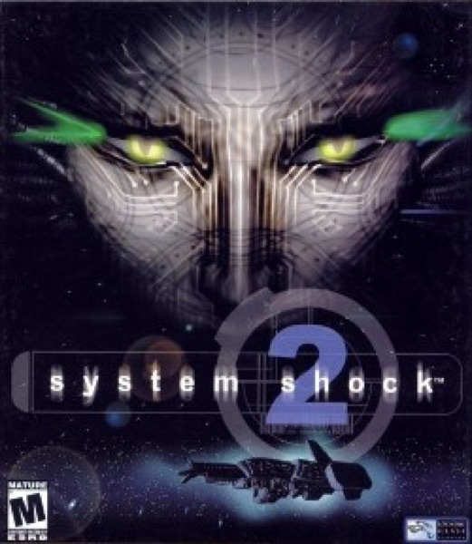

Immersive Sim · 1999
System Shock 2
A haunted starship that let you solve it wrong and live with it.

Cover: Wikipedia: System Shock 2
Facts
- Released
- 1999-08-11
- Genre
- Immersive Sim
- Category
- Immersive Sim
- Platforms
- PC
- Developers
- Irrational Games, Looking Glass Studios
- Publishers
- Electronic Arts